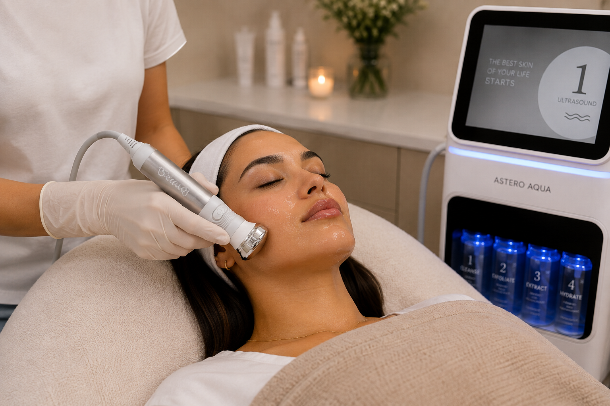
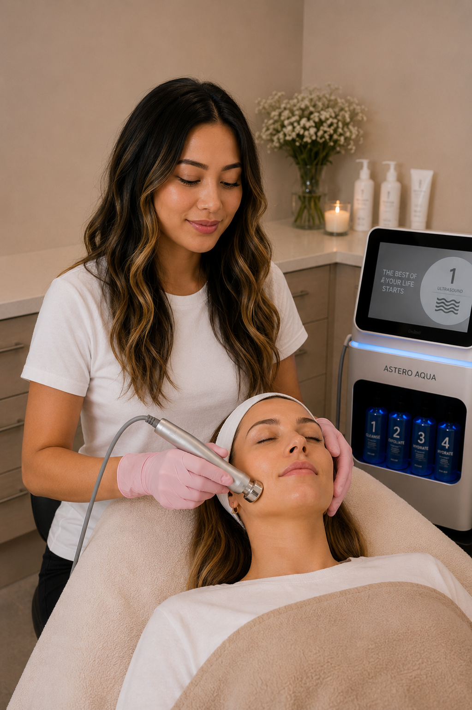

Radiance & glow
Hydraterende en verzorgende serums helpen de huid comfortabel en soepel te laten aanvoelen, terwijl lichtreflecterende of subtiel getinte formules de teint direct frisser kunnen laten ogen.

BB Glow Facial Radiance is een cosmetische behandeling waarbij verzorgende en, afhankelijk van het gekozen protocol, subtiel getinte of lichtreflecterende serums samen met een needlingtechniek op de huid worden toegepast.
Microneedling maakt zeer kleine microkanalen in de oppervlakkige huid. Daardoor kan de huid tijdelijk beter doorlaatbaar worden voor geschikte topicale producten. De behandeling wordt vaak gecombineerd met hydraterende en huidverzorgende ingrediënten om de huid direct frisser, gladder en stralender te laten ogen.
Het doel is een verzorgde, luminous uitstraling en een optisch egalere teint. BB Glow moet niet worden gezien als een gegarandeerde permanente foundation of als behandeling die de natuurlijke huidskleur blijvend verandert.
Hydraterende en verzorgende serums helpen de huid comfortabel en soepel te laten aanvoelen, terwijl lichtreflecterende of subtiel getinte formules de teint direct frisser kunnen laten ogen.
Het cosmetische BB Glow-effect is vooral gericht op de zichtbare uitstraling van de huid: minder dof, meer luminous en optisch gelijkmatiger van kleur en textuur.
De needlingcomponent veroorzaakt gecontroleerde microprikkels. Onderzoek naar microneedling laat zien dat dit het natuurlijke herstelproces van de huid kan activeren en op termijn invloed kan hebben op huidtextuur en collageenremodellering.

Het behandelprotocol wordt afgestemd op jouw huidconditie, gevoeligheid en gewenste uitstraling. Er wordt uitsluitend gewerkt met producten die geschikt zijn voor het gekozen behandelprotocol.
Make-up, SPF, talg en oppervlakkige vervuiling worden verwijderd. De huid wordt zorgvuldig voorbereid zodat de behandeling schoon en gecontroleerd kan worden uitgevoerd.
We beoordelen onder andere hydratatie, gevoeligheid en teint. Verder kunt u kiezen tussen Salmon DNA Gold Ampoule of SkinBooster PDRN EXO.
Met een geschikte needlingtechniek worden gecontroleerde microkanaaltjes in de oppervlakkige huid gecreëerd. De intensiteit en diepte worden afgestemd op het behandelgebied en de huid.
Het geselecteerde verzorgingsprotocol wordt aangebracht met focus op hydratatie, comfort en een frisse uitstraling. Het zichtbare glow-effect kan mede afkomstig zijn van hydraterende, lichtreflecterende of subtiel getinte bestanddelen.
De huid wordt na de behandeling gekoeld en gekalmeerd. Dit helpt roodheid en gevoeligheid te verminderen en brengt de huid weer tot rust.
BB Glow Facial Radiance kan passen wanneer je vooral een frisse, verzorgde en luminous uitstraling zoekt en je huid geschikt is voor een needlingbehandeling. Bij actieve ontstekingen, infecties of bepaalde huidaandoeningen kan een andere behandeling geschikter zijn.
“BB Glow” is geen gestandaardiseerd medisch behandelprotocol en de exacte samenstelling van gebruikte serums verschilt per merk en aanbieder. Wetenschappelijke literatuur ondersteunt vooral de algemene principes van microneedling en transdermale producttoediening; dit is niet hetzelfde als bewijs voor een specifiek BB Glow-serum of voor een langdurig foundation-effect.
Microneedling gebruikt fijne naalden om gecontroleerde microkanaaltjes in de huid te maken. Dit activeert wondherstelprocessen en kan tegelijkertijd de passage van bepaalde topicale stoffen door de normaal moeilijk doordringbare huidbarrière verhogen.
Klinische en experimentele studies beoordelen microneedling voor onder andere huidtextuur, littekens en huidverjonging. Daarnaast wordt onderzocht hoe microneedles microkanalen creëren die de penetratie van geselecteerde actieve stoffen kunnen vergroten.
Microneedling heeft wetenschappelijke ondersteuning als minimaal invasieve techniek voor verschillende dermatologische en cosmetische indicaties. Tegelijkertijd waarschuwen medische bronnen dat het inbrengen van niet specifiek daarvoor beoordeelde topicale producten extra risico's kan geven, waaronder irritatie, infectie, pigmentverandering en zeldzame allergische of granulomateuze reacties. Daarom mogen algemene microneedlingresultaten niet één-op-één worden toegeschreven aan elk BB Glow-product of -protocol.
BB Glow is geen gestandaardiseerde wetenschappelijke behandelnaam. Apparaten, naalddiepte, serums, pigmenten en protocollen verschillen sterk tussen aanbieders. De FDA vermeldt dat microneedling-apparaten niet zijn beoordeeld voor het inbrengen van cosmetica, geneesmiddelen of andere topicale producten in de huid. Resultaten uit algemene microneedlingstudies zijn daarom niet automatisch gelijk aan het effect of de veiligheid van iedere individuele BB Glow Facial Radiance-behandeling.